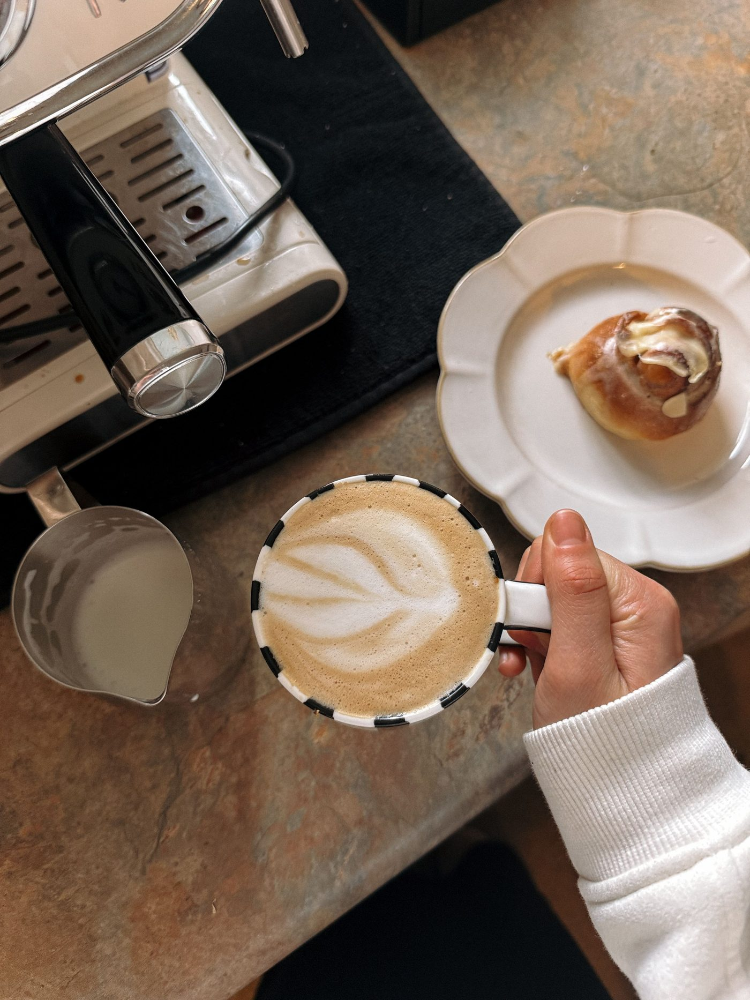
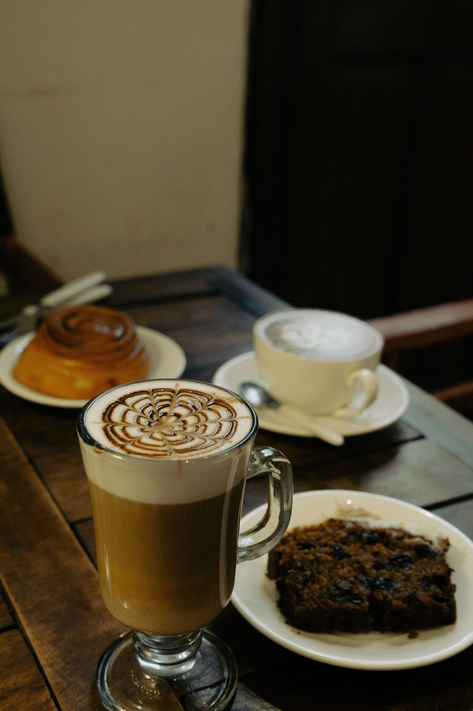

A cafe, bakery, and pantry in downtown Asheville celebrating local foods, owned by chef John Fleer.
The Rhu is a cafe, bakery, and pantry in downtown Asheville celebrating local foods, owned by chef John Fleer, in a multi-level downtown space with upstairs seating and a local-producer focus. The menu includes breakfast and lunch, house-made pastries and breads, a smoked trout bagel, a Benton's biscuit, biscuits and gravy, pimiento cheese grits and collards, and locally roasted coffee. Catering is by inquiry.
5.0 from 46 Google reviews.
Call to ask: +1 828-785-1799
Photos


All photos on this page are stock photos, not photos of this business.
Services
Breakfast and lunch
Breakfast and lunch at the downtown Asheville cafe, bakery, and pantry, celebrating local foods.
House-made pastries and breads
House-made pastries and breads at the downtown Asheville cafe, celebrating local foods.
Smoked trout bagel
A smoked trout bagel at the downtown Asheville cafe, bakery, and pantry.
Benton's biscuit
A Benton’s biscuit at the downtown Asheville cafe, bakery, and pantry.
Biscuits and gravy
Biscuits and gravy at the downtown Asheville cafe, bakery, and pantry.
Pimiento cheese grits and collards
Pimiento cheese grits and collards at the downtown Asheville cafe, bakery, and pantry.
Locally roasted coffee
Locally roasted coffee at the downtown Asheville cafe, bakery, and pantry.
Catering inquiry
Catering by inquiry.